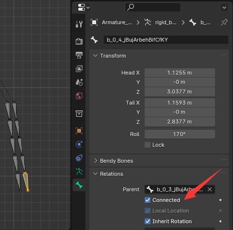

FAQ
Why does relative displacement still occur after simulation even though the joint distance is set to 0?
The constraints of simulation engines such as physx are not absolute constraints. Too large a force (such as the force of a kinematic rigid body) or too small position solver iteration will cause it to break away from the constraints.
① Increase the number of steps of the position iterator to improve simulation accuracy
② Set the bone attribute to connected, so that the bone is hard constrained to the tail of the parent, and only the rotation result of physx will be applied.
③ Set additional constraints. More detail see additional constraint document.
Why does jitter occur?
When a rigid body breaks away from a hard constraint, it will try to return to the position where the constraint should be, and will generate a large recovery force. At this time, if there is a kinematic rigid body that prevents it from returning to its supposed position or rotating, it will jitter in simulation results.
① Adjust the position of kinematic rigidbody so that it does not conflict with hard constraints
② Take out the jittered part separately, disable the conflicting kinematic rigid body and recalculate it separately
③ Adjust parmeter. Sometimes, even though you have relaxed the constraints, you may still find that there is some jitter when your thighs are raised and collide with the skirt. This may be because the rigid body is separated from the hard constraints due to friction. You can try to reduce the friction coefficient.
④ give a little bit distance limit. At the base of the thigh, jitter often occurs. This is because of the conflict between the thigh bone pivot and skirt base bone pivot. You can add a little bit distance limit to the bone rigid body at the base of the skirt to allow it to have a small amount of move to avoid jitter caused by the conflict of hard constraints. (Of course, you can also optimize the bone binding and model, but it is more cumbersome).
~~Why did the simulation stop early when playback?~~
~~Should be the frame step not continuous. This addon need to get every continuous frame to be simulated.~~
~~① You may try to skip the frame when playback.~~
~~② Check whether you select the “Play Every Frame” playback mode(in Timeline viewport -> Playback -> Sync)~~

Why is the simulation unable to move despite setting upper and lower displacement limits?
① Check whether connected is checked in the bone attributes. Connected is the option for blender to lock the bone displacement. Bones with this option checked cannot move in posture mode.
② Whether the joint stiffness and the rigid body mass match. If the spring stiffness is too large or the rigid body mass is too small, the force will not be enough to move the rigid body, so it cannot move.
What should I do if the FPS is too low during playback?
① Try to hide your mesh. You can move the mesh to a collection to hide them, and playback with only armature.

② Try to remain only armature modifier. Some modifiers consume a lot of performance, like Geometry node, you can try to apply or disable them.
③ Playback without rigidbody modify mode, in rigidbody modify mode you can view the rigidbody shape, but the drawing api efficiency of the preview is not high, and some data need to be calculated in real time, so the playback speed will be slowed down when there are lots rigid bodies exist.
④ Reduce the number of iteration steps. A reasonable number of iteration steps can improve the calculation speed. You can use 1 iter number for playback, and use high iter number in final render.
⑤ Try to bake the animation into key frames and then play it.
⑥ Try to divide the simulation into separate parts, and simulate them separately.
What should I do if the laggy in rigidbody modify mode?
① Increase refresh interval.
② Select “Selected Bone Only” to only preview the selected rigidbody bone.
Why can’t rigidbody bones be moved manually?
① Because this addon drives bones by driver objects, you can move the driver obj to move bone.
② If you want to temporarily move the bones manually, the toolbar has a disable driver constraint. Used in conjunction with the keyframing option, you can temporarily gain control of your bones.
③ If you want to completely delete the driver, select the bone in rigid body modification mode and press Ctrl+Alt+Shift+C. This will delete the bone constraints and delete the driver object. Note that animation keyframes are set on the drive, so this operation will delete the animation.
High speed movement penetrate rigidbody issues
when a rigid body move in a very high speed, rigidbody will penetrate, and collision will not happen. To avoid this, physx has a feature call ccd. But in my practice, I have not seen such situation, and the ccd need addtional calculation, so I did not add in bonx. But If you have a high speed rigidbody scene and penetration occur, you can send the blender project to me to let me think about this feature.
Why Custom Rigidbody Shape not work correctly
In rigidbody simulation, convex hull is used to save computational resources. If you use a concave hull shape, it will be baked into convex by physx.

Why this addon using empty obj to drive bones?
For those developer who want to do this. If you want to set transform for a obj with parent, you must call update() to ensure the parent matrix latest. But update() function will update from whole scene, if your scene is huge, the process will be extremely slow.
bpy.context.view_layer.update()